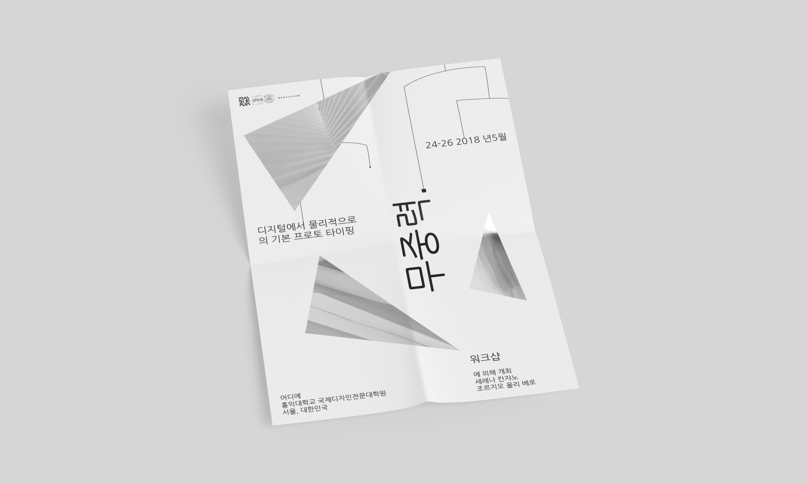

Weightless
Poster for a workshop heald in Seoul (Korea)
Visual Design

Design of a poster for the workshop "Weightless". Basic Prototyping from Digital to Physical. Digital information is becoming more and more obtrusive in people’s everyday life. Web and mobile applications proposes highly addictive systems that limit the focus of people on small screen based devices. Given today’s context, designers has to respond to new challenges and opportunities by crafting experiences that goes beyond digital screens and pay attention to the social impact of technologies.
Goal of the workshop is to design and prototype (interactive) systems featuring a physical output based on kineticism, to involve the final user and gather data to create a meaningful message, to experiment through low-fi techniques and physical sketches. This project was particulary interesting because it was my first sperimentation with the Korean typography. It was very insightful to realize the two versions, one in english and the other in korean.